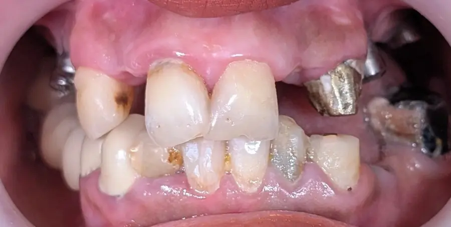

نسخه استخراجشده؛ ترجمه یا تأیید علمی انجام نشده است. وضعیت: captured
بیمار برای درمان پروتز ایمپلنتهای خلفی آمده است. شکایت اصلیاش رفلکس شدید گگ (Gag Reflex) و ناممکن بودن قالبگیری سنتی است. به گفتهی خودش، درمان زیبایی و روکشهای قدامی را همکار دیگری انجام میدهد و تو فقط بازسازی استاپهای خلفی (Posterior Stop) را به عهده میگیری. درمان را میپذیری؟

این سه عامل جداگانه قابل مدیریتاند، اما کنار هم ریسک تحلیل استخوان و بافت نرم را در آینده بهشدت بالا میبرند و پیشآگهی قابل قبولی برای درمان باقی نمیگذارند؛ ساختن پروتز روی چنین بستری سرمایهگذاری روی شکستی زمانبندیشده است.
با ارزیابی کیفیت کور دندان کانین (دندان ۳) بالا چپ، تبحر همکار درمانگر بخش قدامی زیر سؤال بود. درمان پروتز قدام و خلف بهشدت به هم وابستهاند و یک سیستم اکلوزالی واحدند؛ پس نبود انسجام میان دو درمانگر:
سنجیدن کیفیت کار همکار بخشی از ارزیابی ریسک خود درمان است، نه قضاوت شخصی.
رفتار بیمار نشان داد که دنبال درمان باکیفیت و استاندارد نیست، بلکه فقط میخواهد مسیر درمان را به نفع خودش بهینه کند: فرایندها را کوتاه و آسان کند. این نگرش در کنار بهداشت ضعیف، ریسک چالشهای بعدی و همکاری نکردن بیمار را دوچندان میکند.
بهدلیل نبود پیشآگهی قابل قبول و ریسکهای بالای بالینی و ارتباطی، درمان پذیرفته نشد. وقتی طرح درمان میان دو درمانگر ناهماهنگ تقسیم میشود و مسئولیت شکست احتمالی ناعادلانه بر دوش یک بخش میافتد، ادامه ندادن آن درمان، هرچند بیمار خواهانش باشد، تصمیم حرفهایتری است. پذیرش هر کیس، خودش یک تصمیم درمانی است.